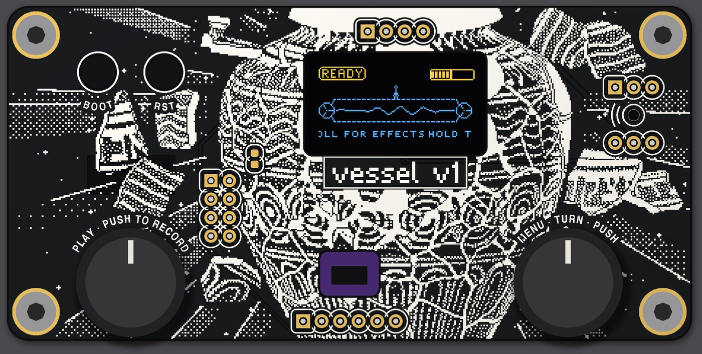
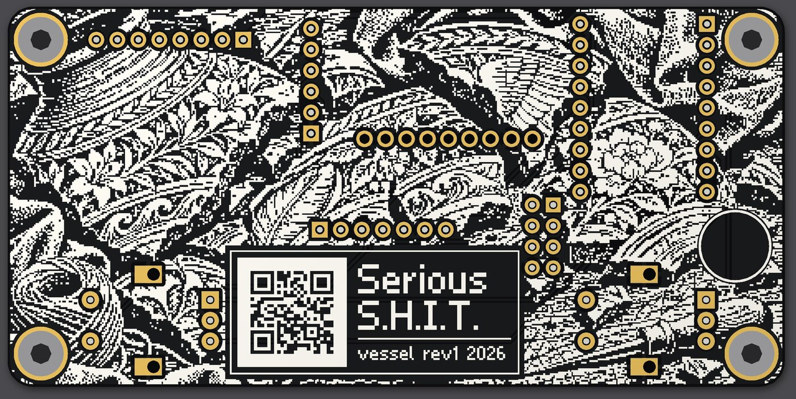
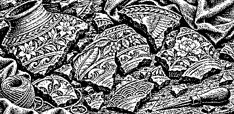

statusמצב
rev eThe first Vessels were made in November 2026. The programs have run on the older board (rev C). On this board, the second knob and the hand sensor have so far been tested on a computer only. If something does not work, write: there is a person on the other end.
rev eה-Vessel הראשונים נבנו בנובמבר 2026. התוכנות רצו על הלוח הקודם (rev C). על הלוח הזה, הכפתור השני וחיישן היד נבדקו עד עכשיו רק על מחשב. אם משהו לא עובד, כתבו: יש בן אדם בצד השני.
first minuteהדקה הראשונה
- Plug a USB-C cable into a phone charger or a computer. The screen wakes up and says READY.
- Plug the 3.5 mm line out into powered speakers, a mixer or a headphone amp. Or switch the speaker on in the menu.
- Hold the left knob down and make a sound. Let go: it loops.
- Tip it. Nose down plays faster, nose up plays backwards. Hold a hand over the small hole to darken it.
- מחברים כבל USB-C למטען של טלפון או למחשב. המסך נדלק וכתוב עליו READY.
- מחברים את יציאת ה-3.5 mm לרמקולים מוגברים, למיקסר או למגבר אוזניות. או מדליקים את הרמקול בתפריט.
- מחזיקים את הכפתור השמאלי לחוץ ומשמיעים צליל. משחררים: זה חוזר בלופ.
- מטים אותו. אף למטה מנגן מהר יותר, אף למעלה מנגן אחורה. יד מעל החור הקטן מכהה את הצליל.
what is on itמה יש עליו

- Left knob
- Turn it: what it does depends on the program. Push it: record.
- Right knob
- Tap it for the menu and turn it to choose. Hold it to freeze the tilt.
- Hand sensor
- The small hole in the middle. Hold a hand over it, from about 25 cm down to 4 cm.
- Tilt
- Tip it and roll it. Most programs listen to this.
- Microphone
- Top right, under the board.
- USB-C
- Power, and MIDI and a sound card for a computer, on one cable.
- Line out
- The 3.5 mm jack next to the USB. Line level: use powered speakers, a mixer or a headphone amp.
- Speaker
- Optional. It can be switched off in the menu when it feeds back into the microphone.
- BOOT, RST
- Two small holes on the face. Only needed to put on a new program.
- כפתור שמאלי
- סיבוב: מה שהוא עושה תלוי בתוכנה. לחיצה: הקלטה.
- כפתור ימני
- נגיעה פותחת את התפריט, סיבוב בוחר. החזקה מקפיאה את ההטיה.
- חיישן יד
- החור הקטן באמצע. מחזיקים יד מעליו, מבערך 25 ס"מ ועד 4 ס"מ.
- הטיה
- מטים ומגלגלים. רוב התוכנות מקשיבות לזה.
- מיקרופון
- למעלה מימין, מתחת ללוח.
- USB-C
- חשמל, וגם MIDI וכרטיס קול למחשב, בכבל אחד.
- יציאת קו
- השקע של 3.5 mm ליד ה-USB. רמת קו: רמקולים מוגברים, מיקסר או מגבר אוזניות.
- רמקול
- אופציונלי. אפשר לכבות אותו בתפריט כשהוא נכנס למשוב עם המיקרופון.
- BOOT, RST
- שני חורים קטנים בחזית. צריך אותם רק כדי להעלות תוכנה חדשה.
programsתוכנות
A Vessel comes with the Samplooler. The others install from the Samplooler page. Your saved loops stay on the board when you change programs.
ה-Vessel מגיע עם ה-Samplooler. את האחרות מתקינים מהדף של ה-Samplooler. הלופים השמורים נשארים על הלוח כשמחליפים תוכנה.
put on a new programלהעלות תוכנה חדשה
You need a computer with Chrome or Edge, and a USB-C data cable. A phone cannot do this.
- Hold BOOT down (a toothpick through the hole marked BOOT) while you plug in the USB cable. Then let go.
- Open the page and press Install under the program you want. Pick the port it offers.
- When it says done, unplug the cable and plug it in again. The page may say the device was lost; that is normal.
Only the program is replaced: your saved loops stay. On Linux there is also a desktop app that installs them with one click: app/, built from source for now.
צריך מחשב עם Chrome או Edge, וכבל USB-C שמעביר נתונים. מטלפון זה לא עובד.
- מחזיקים את BOOT לחוץ (קיסם דרך החור שכתוב עליו BOOT) בזמן שמחברים את כבל ה-USB. ואז משחררים.
- פותחים את הדף ולוחצים Install מתחת לתוכנה שרוצים. בוחרים את הפורט שהוא מציע.
- כשכתוב שזה הסתיים, מנתקים את הכבל ומחברים שוב. ייתכן שהדף יגיד שהמכשיר אבד; זה תקין.
רק התוכנה מתחלפת: הלופים השמורים נשארים. בלינוקס יש גם אפליקציה שמתקינה בלחיצה אחת: app/, בינתיים בבנייה מקוד המקור.

help, for as long as you have itעזרה, כל עוד הוא אצלך
If it breaks, I repair it or replace it. Free, for its whole life.
Write on Instagram, email or WhatsApp, or open a GitHub issue. Say what the screen showed and which program it runs.
אם הוא נשבר, אני מתקן או מחליף. בחינם, כל החיים שלו.
כתבו ב-אינסטגרם, במייל או ב-וואטסאפ, או פתחו issue ב-GitHub. ספרו מה הופיע על המסך ואיזו תוכנה רצה.

manuals and filesמדריכים וקבצים
- Playing it
- The Samplooler manual: every setting, MIDI, updating, what to do when something is wrong. Each program has its own.
- Building one
- The build guide: parts, soldering, the first power-on.
- Source
- github.com/willbearfruits/samplooler: the firmware, every program, the boards, the plugin.
- Licences
- Firmware GPL-3.0. Plugin AGPL-3.0. Boards, docs and pictures CC BY-SA 4.0. I got it for free, I give it for free.
- לנגן
- המדריך של ה-Samplooler: כל ההגדרות, MIDI, עדכונים, ומה לעשות כשמשהו לא עובד. לכל תוכנה יש מדריך משלה. (באנגלית)
- לבנות
- מדריך הבנייה: חלקים, הלחמה, ההדלקה הראשונה. (באנגלית)
- קוד מקור
- github.com/willbearfruits/samplooler: הקושחה, כל התוכנות, הלוחות, הפלאגין.
- רישיונות
- קושחה GPL-3.0. פלאגין AGPL-3.0. לוחות, מסמכים ותמונות CC BY-SA 4.0. קיבלתי בחינם, אני נותן בחינם.